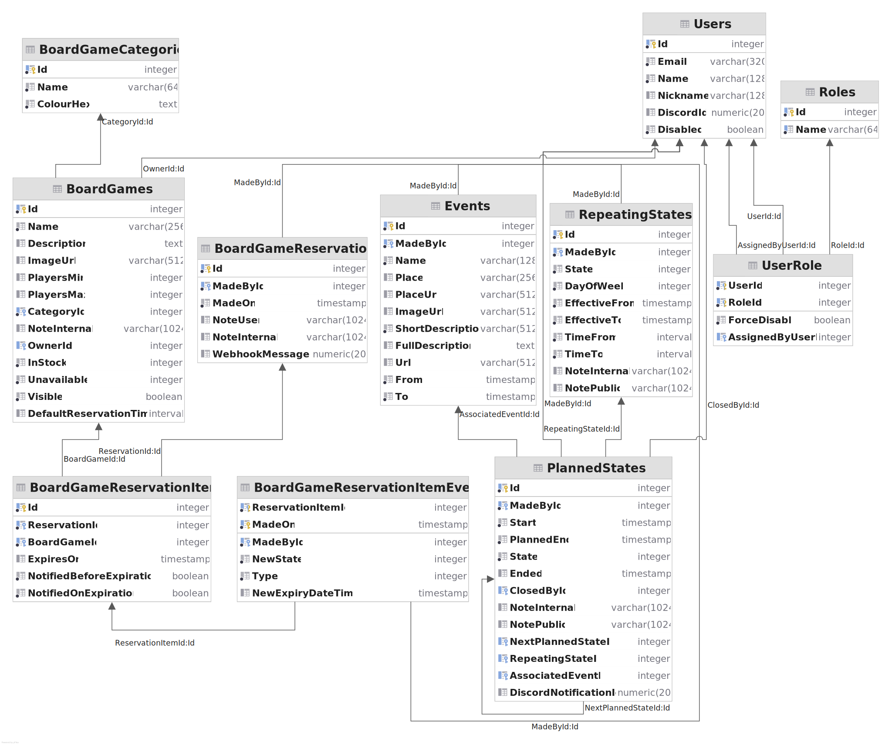

Informační systém pro správu studentského klubu U Kachničky: Kachna Online
- Autoři
- Ondřej Ondryáš
xondry02@stud.fit.vutbr.cz –
vedoucí týmu, správa repozitáře, návrh architektury backendu, implementace autentizace a autorizace,
správy uživatelů a správy stavů klubu
- František Nečas
xnecas27@stud.fit.vutbr.cz –
implementace správy deskových her, rezervačního systému a notifikací
- David Chocholatý
xchoch08@stud.fit.vutbr.cz -
kostra a architektura frontendu, implementace správy akcí
- URL aplikace
- https://www.su.fit.vutbr.cz/kachna (uživatelská aplikace)
-
https://www.su.fit.vutbr.cz/kachna/api/swagger/index.html (vizualizace API a přímá interakce s ním)
Uživatelé systému pro testování
Pro přihlašování do systému je použit interní systém Studentské unie FIT VUT v Brně – „Kachní informační
systém“. V tomto systému jsou zaregistrovaní všichni členové klubu, kteří se registrací stávají sympatizujícími
členy SU. Registrace do systému je nyní možná zde. Chování
systému pro uživatele s jednotlivými rolemi bude demonstrováno při osobním předvedení.
IS implementuje případy užití uvedené v zadání. Případům užití odpovídají jednotlivé
API endpointy.
Implementace
IS je rozdělen na backend (BE) a frontend (FE). BE je aplikace postavená na platformě .NET 6. Jako SŘBD byl
zvolen PostgreSQL (v aktuální verzi 14). FE je webová aplikace postavená na platformě Angular 12.
BE s FE komunikuje pomocí HTTP REST API.
Backend
BE je rozdělen na pět projektů:
- KachnaOnline.App: Hlavní projekt, ve kterém probíhá inicializace aplikačního
serveru, konfigurace, ověřování JWT. Jsou zde implementovány kontroléry, které jsou prostředníkem mezi
uživatelem a business vrstvou.
- KachnaOnline.Dto: Deklarace datových struktur, které jsou v serializované
podobě použity pro komunikaci s klientskou aplikací.
- KachnaOnline.Business: Business vrstva, která implemetnuje aplikační logiku.
- KachnaOnline.Business.Data: Součást business vrstvy, která poskytuje repozitáře
pro přístup k datovým entitám (abstrakce nad použitým ORM).
- KachnaOnline.Data: Data-access layer – entity datové vrstvy a definice
databázového kontextu ORM.
Logika kontrolérů (KachnaOnline.App/Controllers) je implentována v business vrstvě v odpovídajících
fasádách (KachnaOnline.Business/Facades).
V systému se nachází následující kontroléry:
- Auth: API pro vytváření lokálních autorizačních tokenů typu JWT.
- BoardGames: API pro správu deskových her a jejich kategorií.
- BoardGamesReservations: API pro správu rezervací deskových her (uživatelskou
i administrátorskou).
- ClubInfo: zprostředkovává některé informace ze systému KIS (o aktuální
nabídce v klubu a o žebříčku podporovatelů klubu).
- ClubState: API pro správu stavů klubu (změny aktuálního stavu, plánování stavů
v budoucnosti, zjišťování historie stavů).
- Error: speciální kontrolér, pomocí kterého jsou generovány chybové odpovědi ve
standardizovaném formátu na
jinak neobsloužené chyby.
- Events: API pro správu plánu akcí SU (zjišťování probíhajících akcí, historie,
vytváření, mazání, provazování s plánovanými stavy klubu).
- Images: API pro nahrávání obrázků na server (například při přidávání deskových
her).
- RepeatingStates: API pro správu pravidelných otvíracích dob klubu.
- User: API pro správu lokální databáze uživatelů.
TODO TODO
Databáze

Frontend
TODO TODO
Instalace
Běhové prostředí
Aplikace vyžaduje ke spuštění .NET 6 s ASP.NET Core Runtime 6. Instrukce k instalaci běhového prostředí jsou
k dispozici zde.
Aplikace byla testována na
systémech Windows 11 a Linux (distr. Manjaro s kernelem verze 5.15.2) na platformě x64, předpokládáme bezproblémový
běh i na jiných platformách, na kterých je dostupný ASP.NET Core Runtime.
Aplikace vyžaduje běžící instanci SŘBD PostgreSQL. Informace k instalaci a konfiguraci tohoto systému jsou
dostupné zde.
TODO: Frontend?
Konfigurace
Aplikaci je možné konfigurovat v souboru appsettings.json.
Spouštění aplikace
Aplikaci je možné spustit v běžném režimu (aplikačního serveru) pomocí příkazu
dotnet run
spuštěného v adresáři KachnaOnline.App.
Na produkčním serveru je aplikace spuštěna jako systémová služba a přístup k ní je řešen pomocí reverzní proxy
nginx. Různé další možnosti nasazení ASP.NET aplikací jsou popsány zde.
Známé problémy
Zde popište, které body zadání nejsou implementovány a z jakého důvodu. Např. „Z časových důvodů nebyla
implementována správa uživatelů.” Pomůžete tím zrychlit hodnocení, když neimplementované funkce nebudeme muset
dlouze hledat.